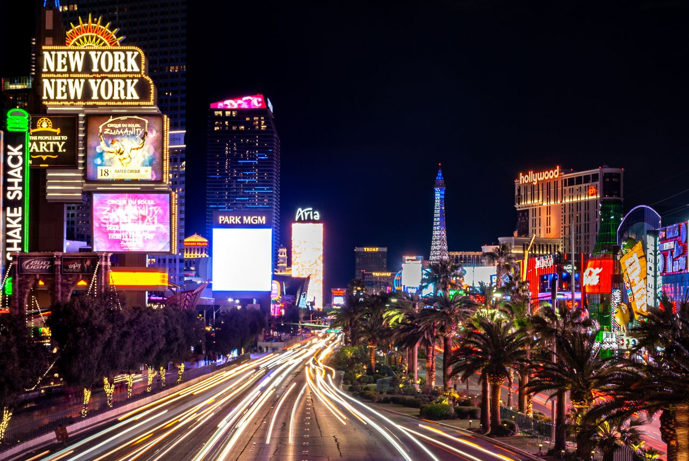
The Las Vegas Strip
Walk along the Strip and explore its hotels, shops, and attractions. Choose a few stops that interest you and leave time to look around.
Las Vegas, Your Way
Delicious food, sweet treats, and a night to remember.
EXPLORE LAS VEGAS
Las Vegas has something for everyone, whether you're interested in sightseeing, watching a show, enjoying the nightlife, or shopping. Explore different places and find activities that interest you during your trip.
DISCOVER THE CITY
From famous landmarks to unique experiences, these are some places worth exploring around Las Vegas.

Walk along the Strip and explore its hotels, shops, and attractions. Choose a few stops that interest you and leave time to look around.
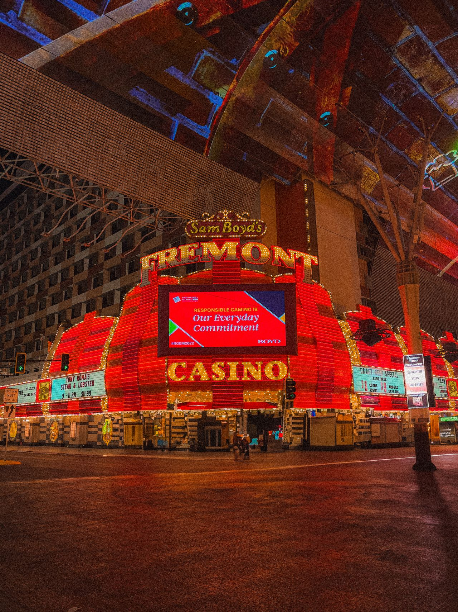
Head downtown to Fremont Street for lights, music, and nightlife. Spend some time walking around and taking in the atmosphere.
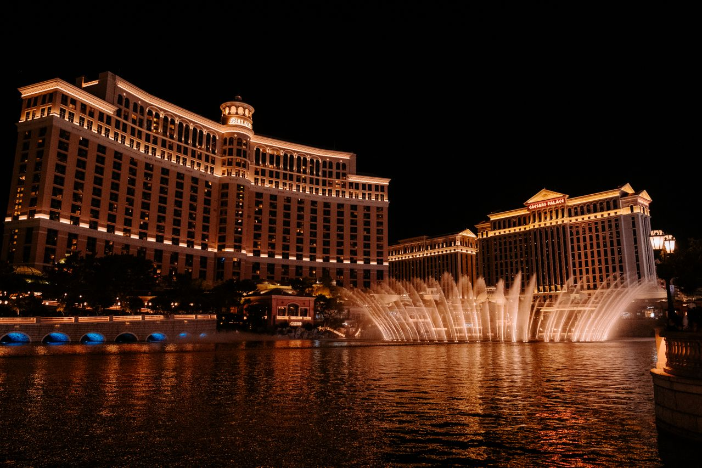
Stop outside Bellagio to watch the fountains move along with music and lights. This free attraction is a fun stop while exploring the Strip.
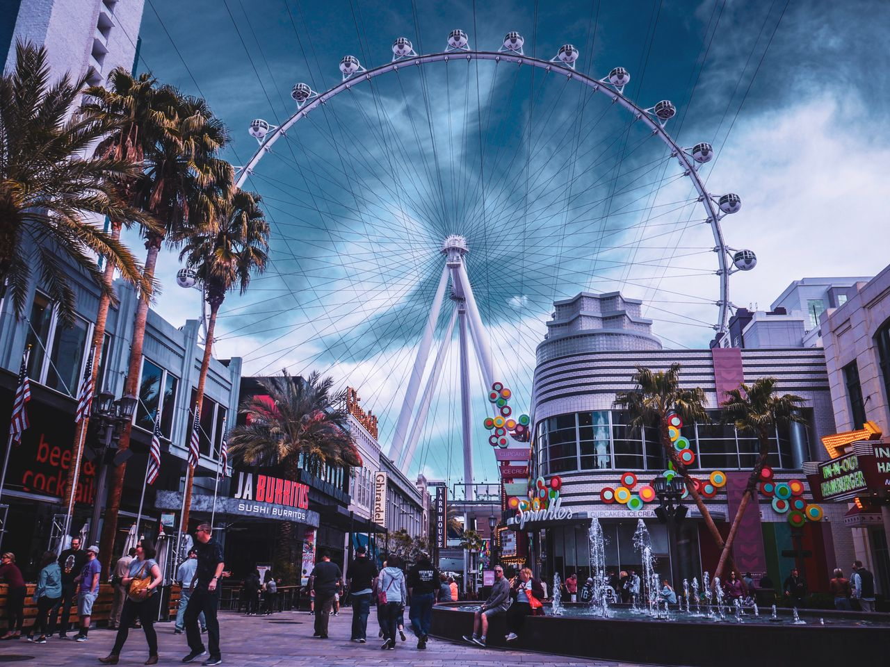
Take a ride on the High Roller for views of Las Vegas from above. The observation wheel takes about 30 minutes to complete one rotation, giving you time to enjoy the scenery.
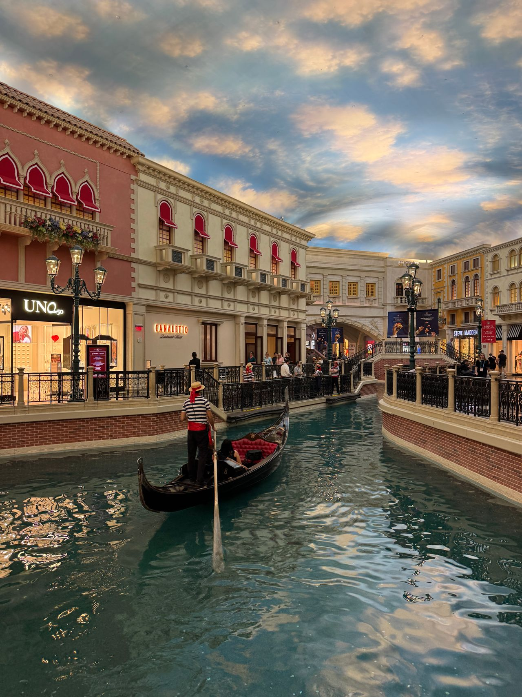
Ride along the canal at The Venetian with a singing gondolier. The resort offers indoor rides through the Grand Canal Shoppes and outdoor rides when the season and weather allow.
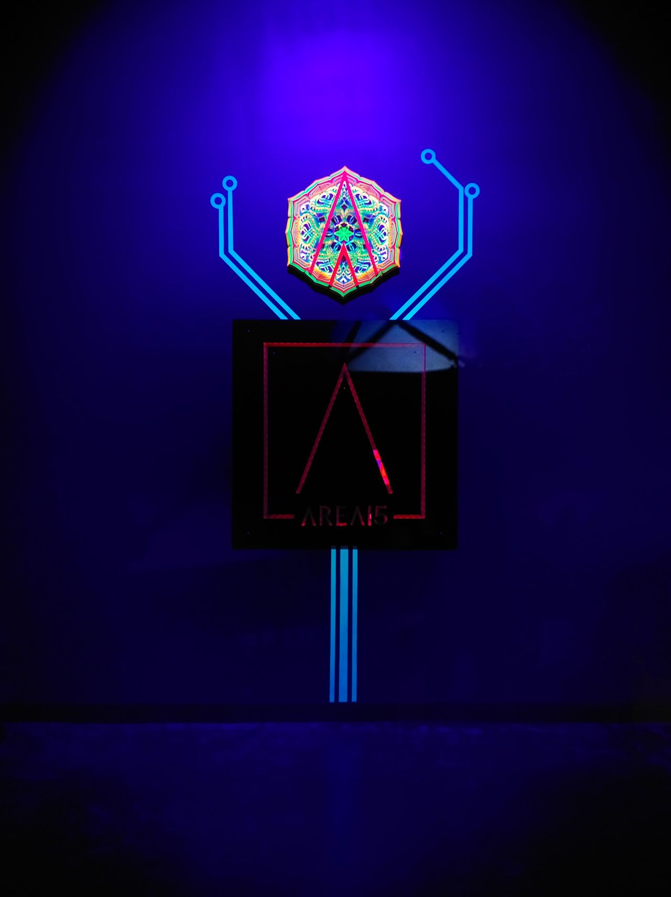
Explore an interactive art experience that looks like a grocery store but has hidden rooms, colorful displays, and unexpected surprises throughout.
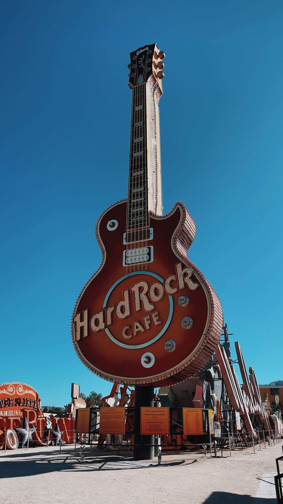
Visit the Neon Museum to see old Las Vegas signs and learn more about the city's history. It is also a nice place to take pictures and explore something different from the Strip.
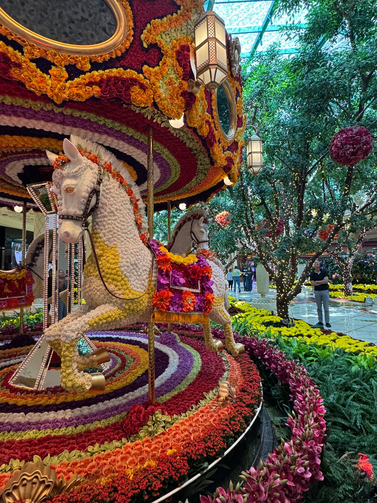
Explore beautiful floral displays inside Bellagio. The conservatory features colorful flowers, creative decorations, and seasonal themes throughout the year. It's another nice free attraction to visit.
A NIGHT TO REMEMBER
From famous Cirque du Soleil performances to magic and comedy, Las Vegas has plenty of shows to enjoy during your trip.
A water-based performance featuring acrobatics, diving, artistic swimming, and impressive stage effects.
A performance combining Michael Jackson's music with dancing, acrobatics, and colorful visual effects.
An action-filled show featuring aerial acrobatics, martial arts, and a moving stage that creates exciting scenes.
A colorful performance featuring acrobatics, comedy, creative costumes, and music.
An adult-oriented show featuring acrobatics, comedy, and live entertainment. This is a good option for visitors who enjoy something a little different.
Enjoy a magic show at The LINQ featuring illusions, creative tricks, and audience interaction.
Experience entertainment at Sphere, a venue known for its large screens, impressive visuals, and immersive shows.
AFTER DARK
Las Vegas offers different ways to enjoy the evening, whether you want to dance, relax with a view, or try something unique.
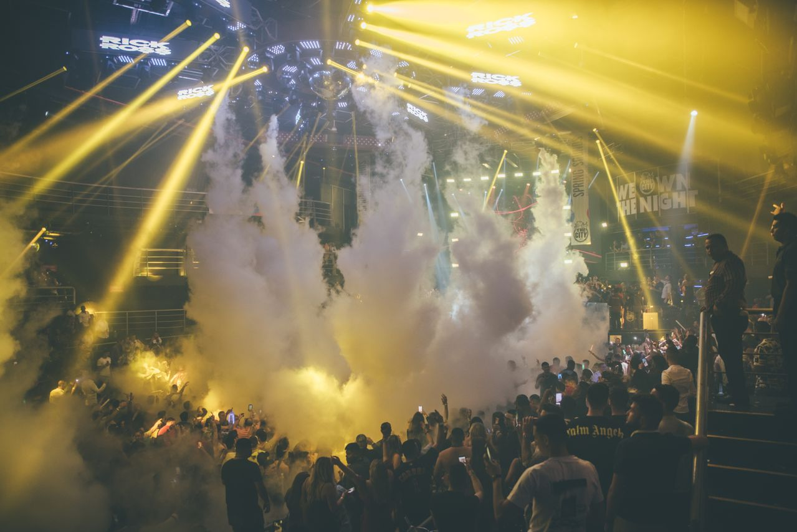
A popular nightclub known for its large moving chandelier, DJs, dancing, and VIP experiences.
A luxurious nightclub with music, DJs, and indoor and outdoor party areas.
A nightclub with live DJs, colorful lighting, and plenty of music and dancing.
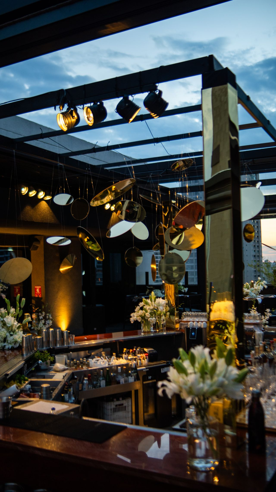
A rooftop lounge with views of Downtown Las Vegas and an outdoor area with fire pits.
An upscale lounge with views of the Las Vegas Strip. This is a nice option for visitors who want a more relaxed evening.
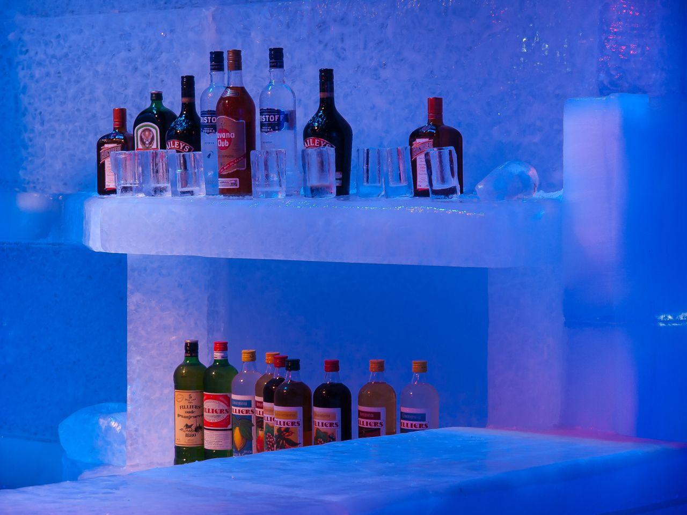
Try something different at an ice bar where the walls, furniture, and sculptures are made of ice. It's a fun place to take pictures and experience something different from a regular nightclub.
Nightclub entry rules, dress codes, prices, and event schedules can vary, so check before visiting.
SHOPPING & SOUVENIRS
Explore luxury malls, specialty stores, outlets, and markets while visiting Las Vegas.
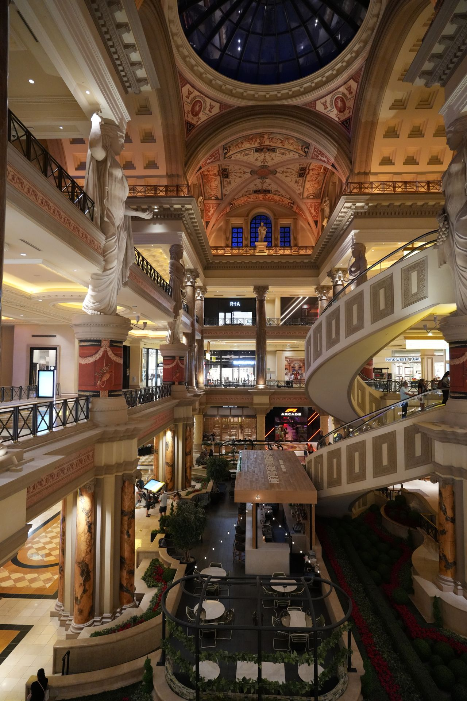
Explore a shopping center with designer stores, restaurants, and Roman-inspired architecture. This is a nice option for luxury shopping.
Explore a luxury shopping center on the Strip with designer stores like Gucci, Louis Vuitton, and Prada.
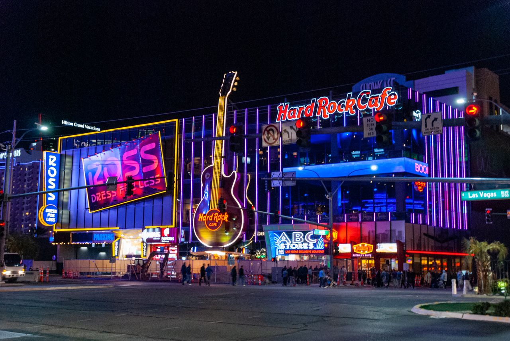
Stop at the Coca-Cola Store for branded clothing, gifts, and souvenirs. Take a look around while exploring the Strip.
Visit Hershey's Chocolate World at New York-New York for chocolate, sweet treats, and souvenirs. Pick something for yourself or bring a gift home.
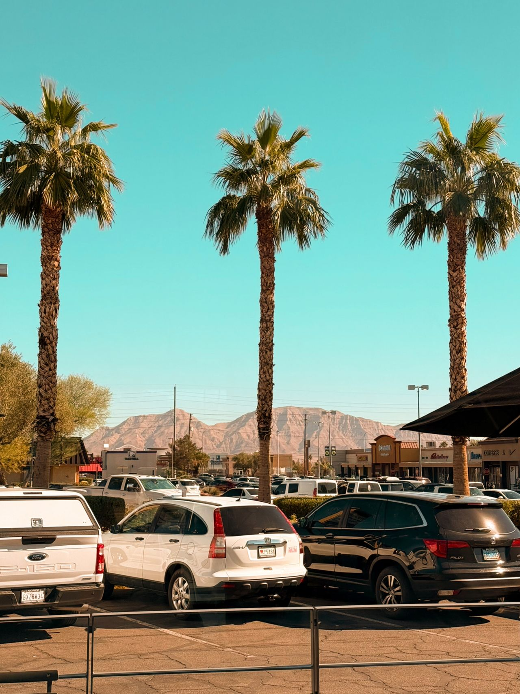
Shop at an outdoor outlet with a variety of popular brands, clothing, shoes, and accessories. This is a good option for visitors looking for deals.
Visit an outdoor swap meet in North Las Vegas with different vendors selling clothes, shoes, gifts, and other items. Visitors can also enjoy food and live music while shopping.